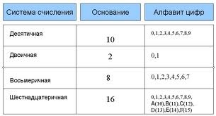
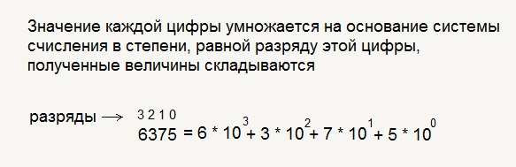
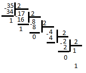
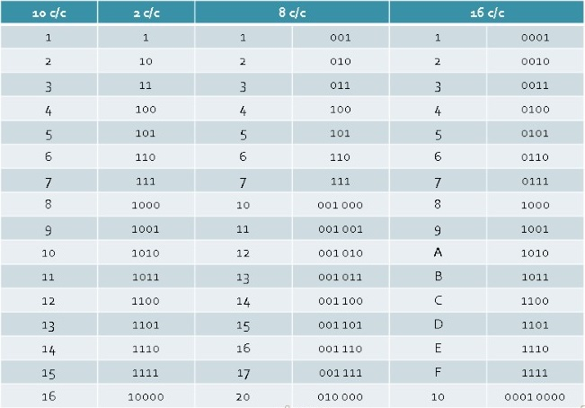

Алфавит СС
Алфавит СС - это набор символов(цифр) для обозначения числа. Он обозначается английской N.
Например, в десятичной СС алфавит состоит из цифр от 0 до 9.

Развёрнутая форма записи числа
Развёрнутая форма записи числа - это запись числа в виде суммы разрадов.
Общая формула:
am-1 am-2 am-3 ... a2 a1 a0
=
am-1 * nm-1 + am-2 * nm-2 ... a2 + n2 + a1 + n 1
где am, am-1, ... - цифры числа, n - основание СС, m - колличество разрядов числа.

Аналогично и для двоичной СС.
Перевод из десятичной СС в двоичную столбиком
Перевёдем число 35.
Для этого нам нужно разделить это число на два, а остаток записать. Дальше таким же образом разделить результат и т. д.

Перепишем остаток с конца
Результат: 1000112
Правила быстрого перевода
Правила быстрого перевода допустимо использовать тогда, когда планируется осуществить перевод внутри родственных СС. Родственные СС - это СС которые можно представить в виде степени одного числа. Для этого удобно использовать триады и тетрады.
Таблица триад и тетрад

Триады это 3 двоичные цифры, а тетрады 4 двоичные цифры.
Для перевода восьмиричного числа в двоичное можно каждую цифру этого числа заменить двоичной триадой по таблице.
Перевод двоичного числа в восьмиричное:
- 1. Разделить целую часть числа на триады справа налево
- 2. Недостающие до триады позиции заполнить незначащими нулями
- 3. Заменить каждую триаду двоичных чисел соответствующей восьмиричной цифрой по таблице
Также можно сделать и с шестнацатиричной СС, только выделять тетрадами.